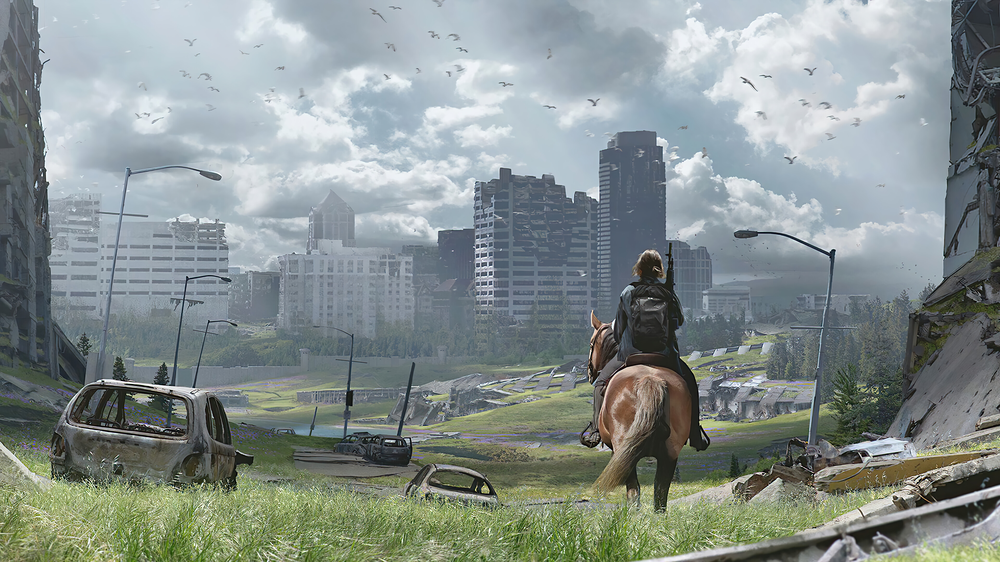
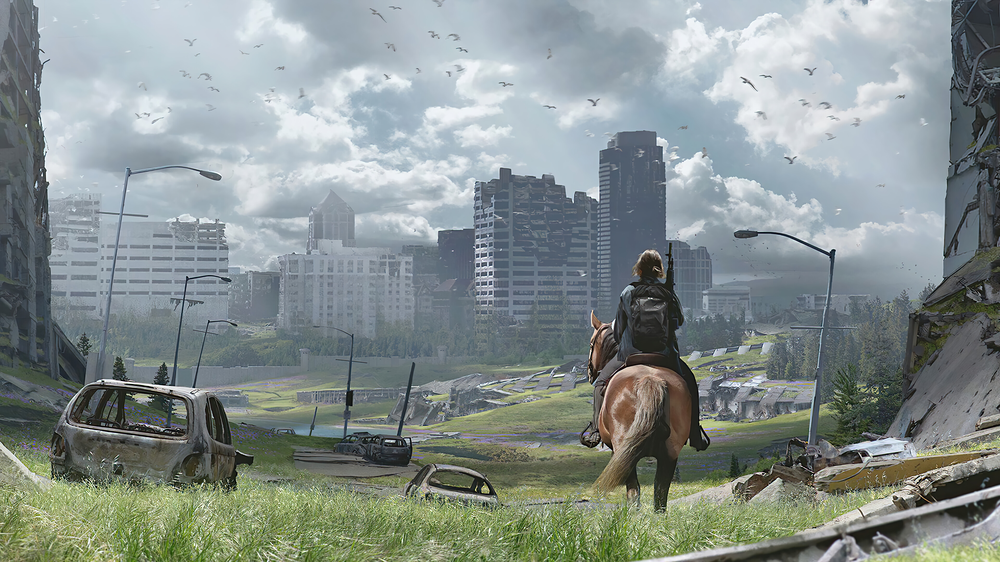

O CICLO DA VINGANÇA
Que preço você pagaria para conseguir justiça?
UMA JORNADA DE VINGANÇA
Cinco anos após a perigosa jornada pelos Estados Unidos pós-pandemia, Ellie e Joel se estabelecem em Jackson, Wyoming, vivendo em uma paz frágil e segura. Eles se integram a uma comunidade de sobreviventes e, apesar do passado, constroem uma vida em que a normalidade parece, enfim, possível. No entanto, essa estabilidade é brutalmente interrompida por um evento violento, que destrói a vida que eles haviam construído e joga Ellie em uma jornada incansável por justiça.
Movida por uma sede de vingança implacável, Ellie embarca em uma jornada brutal por Seattle. Seu caminho é marcado por uma violência que a consome, onde cada passo em direção ao seu objetivo a afasta da sua humanidade. A história explora o preço psicológico e físico da vingança, mostrando como a obsessão por retaliação pode levar à perda de tudo o que se ama.
O jogo apresenta a história não apenas pelo olhar de Ellie, mas também pela perspectiva de Abby, uma das figuras centrais no ciclo de violência. Ao entender as motivações e a jornada de Abby, o jogador é forçado a confrontar a complexidade do ódio e a natureza da retaliação. The Last of Us Part II não busca um final feliz, mas sim uma exploração sombria do trauma e do perdão. No final, a grande batalha não é contra um inimigo, mas sim contra o peso do próprio ódio.
GALERIA
Navegue por uma coleção de imagens que capturam a beleza sombria e a tensão implacável de The Last of Us Part II. Cada foto conta uma história de sobrevivência, perda e o mundo implacável que Ellie e Joel habitam.


 


EDIÇÕES DO JOGO
Compartilhe suas ideias para o futuro do site. :)